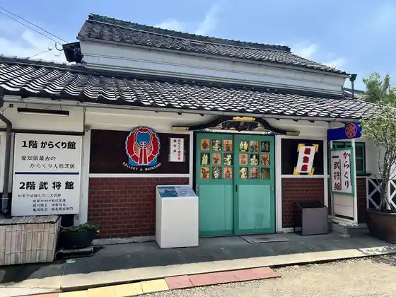
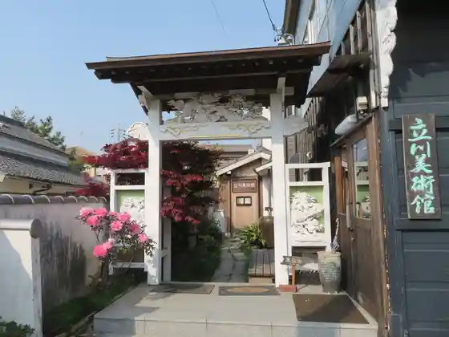
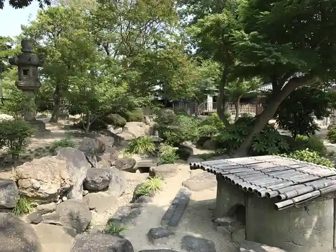
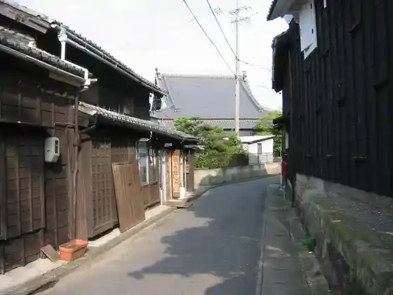

Ya Katsukawa (Higan Hana)
Handa, Aichi · 0569-32-3264 · Official / source link
Tachikawa Art Museum Bekkan (Karakuri Busho Kan Aioi Za)
Handa, Aichi · 0569-29-5897 · Official / source link

Tachikawa Art Museum
Handa, Aichi · 0569-29-5897 · Official / source link

Han Roku Garden
Handa, Aichi · 0569-84-0689 · Official / source link

Koya Kaido
Handa, Aichi · 0569-84-0689 · Official / source link

Kamezaki Eki
Handa, Aichi · Official / source link
Handa Fukushi Fureai Puru
Handa, Aichi · 0569-26-6661 · Official / source link
Handa Unga Kura no Machi
Handa, Aichi · Official / source link
Handa Ritsu Museum
Handa, Aichi · 0569-23-7173 · Official / source link
Handa Sora no Science Museum
Handa, Aichi · 0569-23-7175 · Official / source link
Niimi Nankichi Memorial Museum
Handa, Aichi · 0569-26-4888 · Official / source link
Niimi Nankichi no Seika
Handa, Aichi · 0569-26-4888 · Official / source link
Kyu Nakano Ie House
Handa, Aichi · 0569-23-7173 · Official / source link
Maruhagongitsune Baths
Handa, Aichi · 0569-27-8878 · Official / source link
Oguri Ie House
Handa, Aichi · 0569-32-3264 · Official / source link
Nakano Shuzo KK Kuni Jo Sake no Bunka Kan
Handa, Aichi · 0569-23-1499 · Official / source link
Handa Aka Renga Tatemono (Kyu Kabutobiiru Kojo)
Handa, Aichi · 0569-24-7031 · Official / source link
MIZKAN MUSEUM
Handa, Aichi · 0569-24-5111 · Official / source link
Taketoyosen Konjaku Monogatari - JR Taketoyosen De Meguru Burari Tabi
Handa, Aichi · 0569-47-8588 · Official / source link